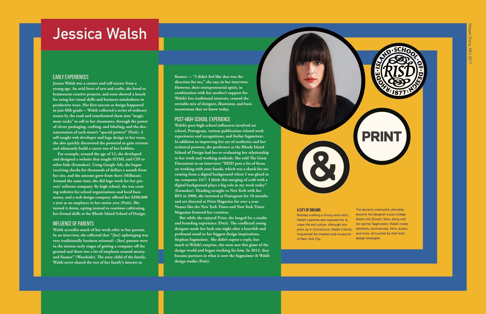
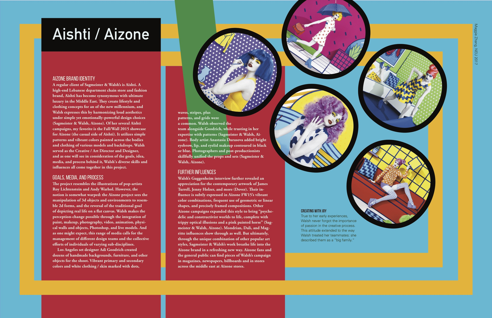
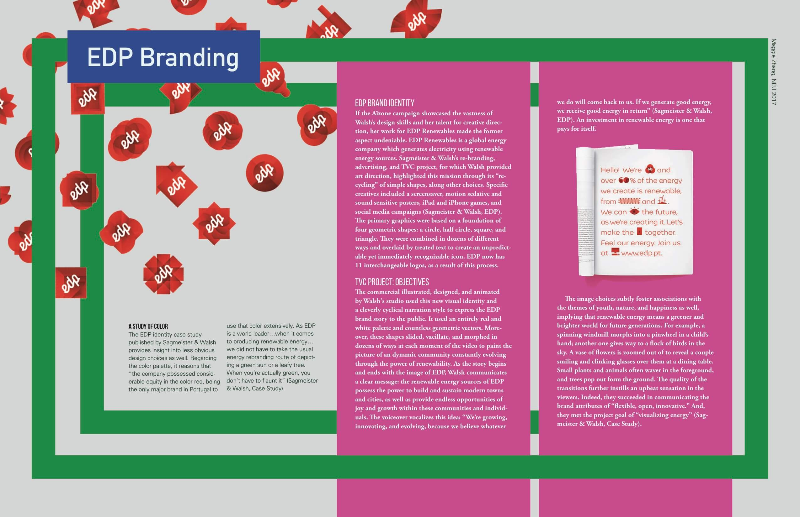
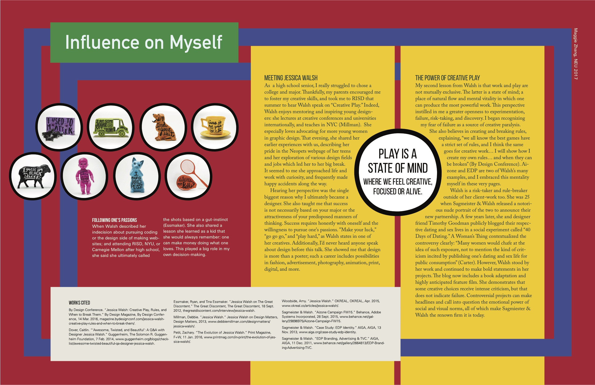

In this designer report, I research and reflected on the early life and select works of one of my favorite contemporary role models: Jessica Walsh. Breaking from my prior experiences with the layout of long texts—characterized by rather minimal and utalitarian treatment—I took a heauristic approach.
I interpreted common motifs and color schemes within Walsh's work, and applied them as a tribute to (as well as a interplay) with her own style. This project uniquly encouraged me to express my individual relationship with the subject, alongside the objective research.
Walsh Report: About the Designer
Walsh Report: Case Study 1
Walsh Report: Case Study 2
Walsh Report: Influence on Myself
